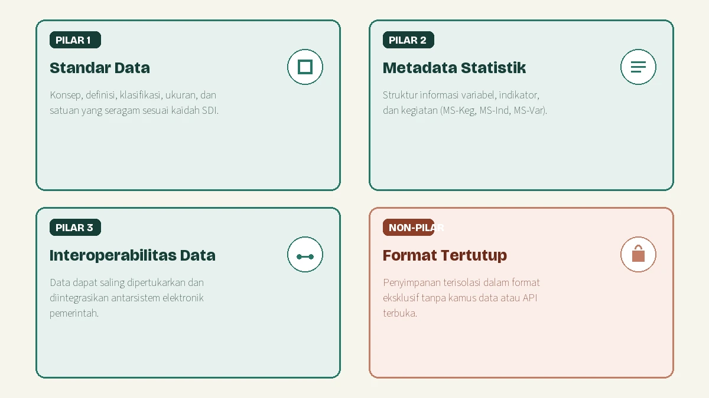

Tantangan Anda


Penguatan Statistik Sektoral
Memahami prinsip Sistem Statistik Nasional, pemenuhan kaidah Satu Data Indonesia, dan alur pengajuan rekomendasi kegiatan statistik melalui ROMANTIK BPS.
Materi → Contoh situasi → Praktik
Berkas misi

Ringkasan materi video
Ringkasan topik utama dalam video.
- Pemeriksaan Kebutuhan dan Pencegahan Duplikasi
Sebelum menyusun kuesioner, periksa apakah data sudah tersedia. Koordinasi dengan BPS dan instansi lain mencegah dua tim mengumpulkan data yang sama.
- Empat Prinsip Satu Data Indonesia
Penerapan Standar Data, Metadata Statistik, Interoperabilitas Data, serta Kode Referensi/Data Induk agar data dapat diintegrasikan dan dimanfaatkan bersama.
- Pengajuan Rekomendasi Statistik (ROMANTIK)
Instansi mengajukan permohonan rekomendasi melalui ROMANTIK pada tahap rancangan sebelum terjun ke lapangan untuk diverifikasi oleh Walidata dan BPS.
Video materi: penguatan-statistik-sektoral-transparan-60fps.mp4
Dua keputusan
Jawab kedua pertanyaan berikut berdasarkan materi dan latihan tadi.
Uji pemahaman
Dua keputusan untuk Anda
Bawa ke pekerjaan
Penguatan Statistik Sektoral dan Rekomendasi
Penyelenggaraan kegiatan statistik sektoral memerlukan koordinasi sejak tahap perencanaan. Rekomendasi BPS melalui aplikasi ROMANTIK mencegah pemborosan anggaran dan menjamin mutu metodologi, sementara metadata statistik menjamin transparansi data.
Sebuah dinas berencana menyelenggarakan survei baru untuk memantau program daerah. Kapan permohonan rekomendasi harus diajukan ke BPS melalui ROMANTIK?
Sesuai regulasi penyelenggaraan statistik, pemberitahuan dan permohonan rekomendasi diajukan pada tahap perencanaan sebelum pelaksanaan pengumpulan data agar metodologi terjamin dan tidak terjadi duplikasi.
Dalam kerangka Satu Data Indonesia (Perpres No. 39 Tahun 2019), apa fungsi utama penyusunan metadata statistik oleh produsen data?
Metadata statistik memberikan konteks, definisi, metodologi, dan batas cakupan data sehingga data dapat dipahami, dipertanggungjawabkan, dan digunakan secara terpadu lintas sektor.
Misi selesai

Hasil latihan
Gunakan aplikasi ROMANTIK untuk setiap rencana kegiatan statistik sektoral, dan pastikan setiap data yang dipublikasikan memenuhi prinsip Satu Data Indonesia.
XP dan Trophy mengikuti aturan GOJAGS Classroom.